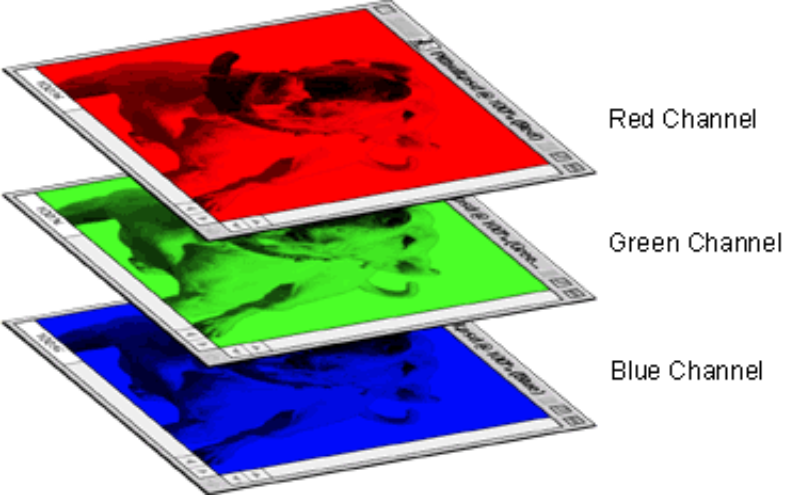

When a color is displayed on a pixel, it uses three different channels. This is because there are three components to a color:
red, green, and blue. Hence the name RGB. Each pixel is actually composed of three tiny dots of light for each of these three colors1.

Each red, green, and blue channel can be given a different intensity, which determines which color appears on the pixel. For instance,
if the red channel is given a value of 255 while the green and blue channels have the value 0, the result is a solid shade of red. On the
other hand, if the blue channel is given 255 instead of red, the pixel turns a solid shade of blue.
But this is boring! We want to give each channel a variety of values for a multitude of different colors. Each channel can hold value from 0 to 255,
which means there are 256 different shades of red, green, and blue to choose from. This means there are 256x256x256 different possible colors, which
gives us over 16 million completely unique choices!